LinkGroupz 사용법
자주 여는 웹 페이지를 그룹으로 모아 두고, 메뉴바(Windows 는 트레이)에서 그룹 하나를 Chrome · Edge · Whale 에 한 번에 열거나 페이지 하나만 골라 여는 앱입니다.
%APPDATA%\LinkGroupz, 확장 폴더는 %APPDATA%\LinkGroupz\chrome-extension 입니다. 설치 방법은 INSTALL.ko.md 를 보세요.소개
#태그 · alias · URL 로 찾습니다.macOS 13(Ventura) 이상의 Apple Silicon(M1 이후) Mac 또는 Windows 10 · 11(64비트), 그리고 Google Chrome · Microsoft Edge · Naver Whale 중 하나가 필요합니다. Intel Mac 에서는 실행되지 않습니다.
설치
- 받은
LinkGroupz-x.y.z.dmg를 더블클릭해 엽니다. - 열린 창에서 LinkGroupz 아이콘을 Applications 폴더로 끌어다 놓습니다.
- 응용 프로그램 폴더에서 LinkGroupz 를 엽니다.
처음 열 때 보안 경고가 뜨면
Apple 의 공증을 받지 않은 앱이라, 처음 열 때 macOS 가 ‘LinkGroupz’을(를) 열지 않음 창으로 막습니다. ‘완료’를 누른 뒤 다음 순서로 한 번만 허용하면 됩니다. ‘휴지통으로 이동’은 누르지 마세요.
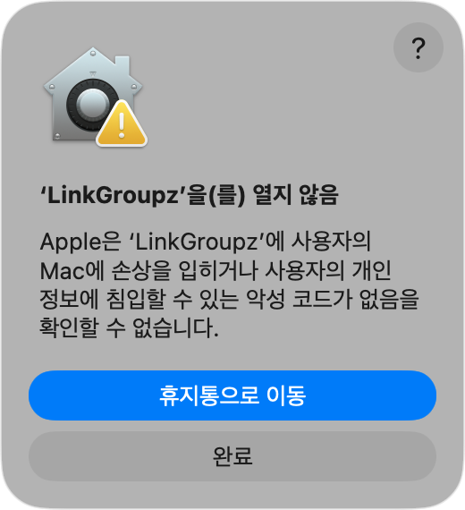
- 시스템 설정 → 개인정보 보호 및 보안을 엽니다.
- 아래쪽 보안 항목의 Mac을 보호하기 위해 ‘LinkGroupz’을(를) 차단했습니다. 옆 그래도 열기를 누릅니다.
- Mac 암호(또는 Touch ID)를 넣고, 다시 뜨는 창에서 그래도 열기를 누릅니다. 이 항목은 경고 창이 뜬 뒤 한 시간쯤만 보이니, 안 보이면 앱을 한 번 더 열어 보세요.
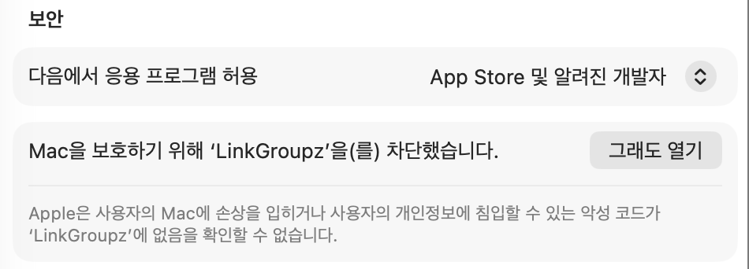
xattr -dr com.apple.quarantine /Applications/LinkGroupz.app처음 세팅
앱을 처음 열면 관리 창과 시작 안내 창이 뜹니다. 시작 안내 창은 메뉴바의 LinkGroupz 아이콘(카드 세 장) → 안내로 언제든 다시 열 수 있습니다. 재부팅해도 자동으로 켜지게 하려면 설정의 로그인할 때 자동으로 실행을 켜세요.
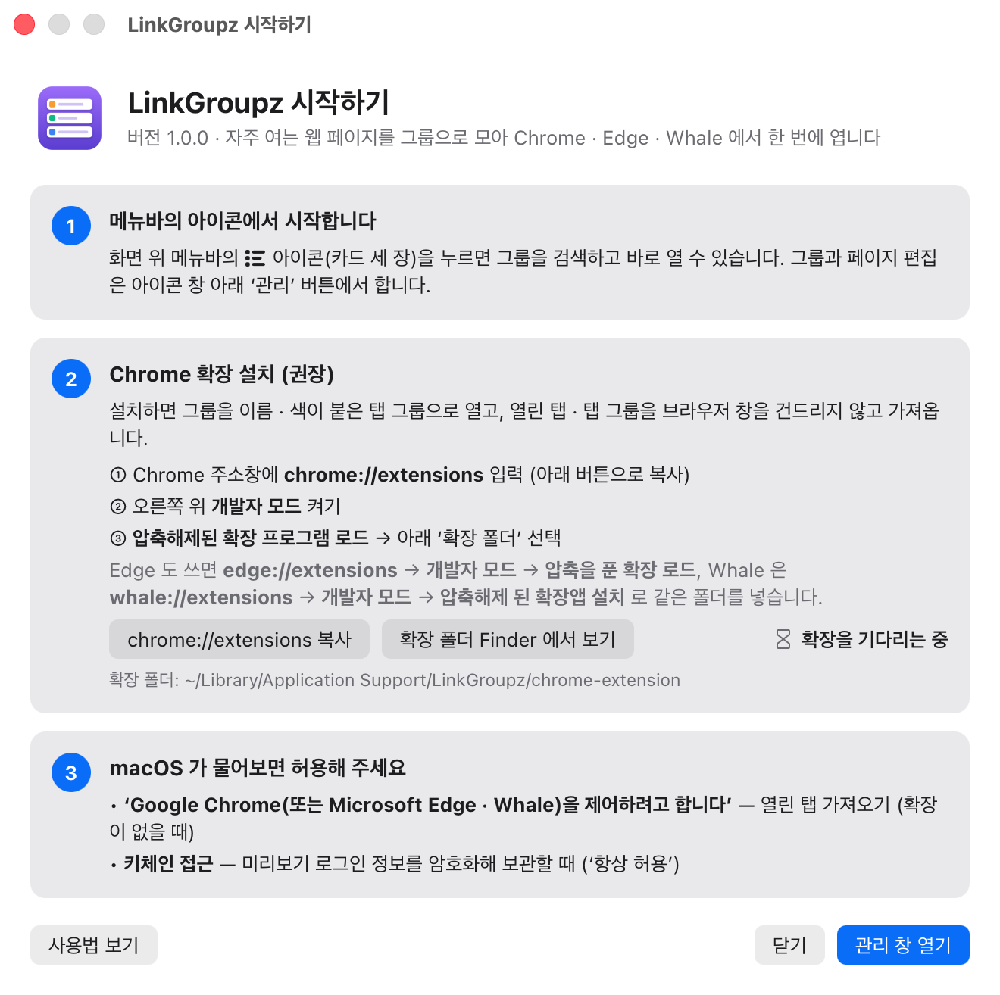
확장 설치 (권장)
확장이 없어도 앱은 동작하지만, 설치하면 다음이 가능해집니다.
- 그룹을 이름 · 색이 붙은 탭 그룹으로 열기 (없으면 새 창에 모두 엽니다)
- 브라우저의 탭 그룹을 그대로 가져오기
- 탭 가져오기를 할 때 브라우저 창을 건드리지 않음
- Chrome 주소창에
chrome://extensions를 입력합니다. (시작 안내 창의 버튼으로 복사할 수 있습니다) - 오른쪽 위 개발자 모드를 켭니다.
- 압축해제된 확장 프로그램 로드를 누르고 아래 폴더를 고릅니다.
~/Library/Application Support/LinkGroupz/chrome-extension
시작 안내 창의 확장 폴더 Finder 에서 보기를 누르면 이 폴더가 열립니다. 폴더 고르는 창에서 ⌘⇧G 를 누르고 위 경로를 붙여 넣어도 됩니다. - 시작 안내 창이 확장 설치됨으로 바뀌면 끝입니다.
Edge · Whale 도 쓰면 같은 폴더를 그 브라우저에도 넣습니다. 확장은 브라우저마다 따로 감지합니다.
- Edge: 주소창에
edge://extensions→ 개발자 모드 켜기 → 압축을 푼 확장 로드 → 같은 폴더 선택 - Whale: 주소창에
whale://extensions→ 개발자 모드 켜기 → 압축해제 된 확장앱 설치 → 같은 폴더 선택
chrome://extensions · edge://extensions · whale://extensions)의 LinkGroupz Tab Groups 카드에서 새로고침(⟳) 버튼을 한 번 눌러 주세요.macOS 가 물어보면 허용할 것
| 물어보는 창 | 언제 | 누를 것 |
|---|---|---|
| ‘LinkGroupz’이(가) ‘Google Chrome’(또는 ‘Microsoft Edge’ · ‘Whale’)을 제어하려고 합니다 | 확장 없이 열린 탭 가져오기를 그 브라우저에서 처음 할 때 | 허용 |
| 키체인에서 LinkGroupz이(가) ‘LinkGroupz 미리보기 로그인 쿠키’에 저장된 비밀 정보를 사용하려고 합니다 (macOS 버전에 따라 ‘… 키 접근을 허용하고자 합니다’) | 미리보기를 처음 열 때, 설정에서 저장된 로그인 확인을 누를 때 (앱을 업데이트하면 다시 물을 수 있습니다) | Mac 로그인 암호 입력 후 항상 허용 |
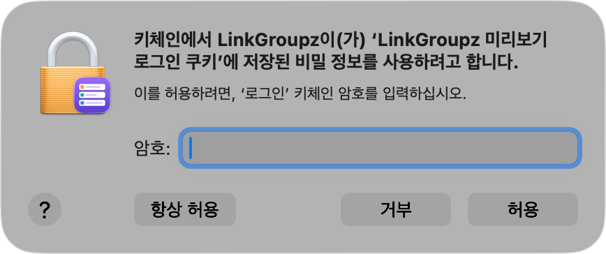
사용법
메뉴바에서 바로 열기
화면 위 메뉴바의 LinkGroupz 아이콘(카드 세 장)을 누르면 그룹 목록이 뜹니다.
- 그룹 카드 클릭 → 그룹의 페이지를 모두 그 그룹의 브라우저(카드 오른쪽 끝 Chrome · Edge · Whale 아이콘)에서 엽니다. 아이콘 왼쪽 숫자는 페이지 수입니다.
- › 로 펼친 뒤 페이지 클릭 → 그 페이지만 엽니다. 펼친 그룹은 다시 ⌄ 를 누르거나 검색창 옆 모두 접기로 접습니다.
- 섹션은 관리 창과 같은 순서로 나옵니다. 섹션 이름을 누르면 접고 펼칩니다.
- 맨 위 검색창에 입력하면 바로 걸러지고, 맞는 글자가 강조됩니다.
- 키보드로 고르기: 창이 열리면 ↓ ↑ 로 섹션 · 그룹 · 페이지를 고르고 Enter 로 엽니다. → 는 그룹 · 섹션 펼치기, ← 는 접기입니다. 검색어를 입력하면 맨 위 결과가 골라져 있어 바로 Enter 로 열 수 있습니다. Tab 은 고른 줄의 오른쪽 클릭 메뉴를 엽니다(메뉴 안에서도 ↑ ↓ · Enter). Esc 는 검색어를 지우고, 한 번 더 누르면 창을 닫습니다.
- 오른쪽 클릭: 섹션 · 그룹 · 페이지를 오른쪽 클릭하면 관리 창과 같은 메뉴가 나옵니다. 편집 · 페이지 추가 · 미리보기 · 삭제처럼 입력이나 확인이 필요한 항목은 관리 창을 열어 이어서 합니다.
- 끌어서 옮기기: 그룹 · 섹션 · 페이지를 끌어 순서를 바꾸고, 그룹을 섹션 머리줄에 놓으면 섹션에 넣습니다. 페이지를 다른 그룹 위에 놓으면 그 그룹으로 옮깁니다.
- 창 크기: 창 가장자리를 끌면 크기가 바뀌고, 바꾼 크기로 계속 엽니다. 원래대로 하려면 아래쪽 📌 버튼 → 창 크기 원래대로.
- 메뉴바에서 떼어 놓기: 아래쪽 📌 버튼 → 메뉴바에서 떼어 놓기. 떼어 놓은 창은 다른 곳을 눌러도 닫히지 않고, 맨 위 띠나 검색창 둘레를 끌어 원하는 곳에 둘 수 있습니다(다음에도 그 자리에 뜹니다). 그룹을 열어도 그대로 남습니다. 📌 → 메뉴바에 붙이기로 되돌립니다.
- 아래쪽 버튼: 관리(관리 창) · 설정 · 안내(시작 안내 창) · 📌(떼어 놓기 · 창 크기) · 종료
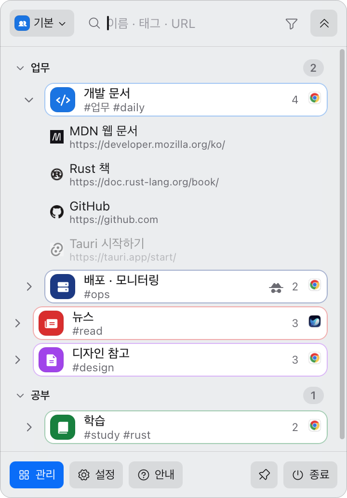
관리 창
처음 켤 때 열리고, 그 뒤에는 메뉴바 창 아래 관리 버튼이나 Dock 아이콘으로 엽니다. 앱을 켤 때마다 관리 창을 열려면 설정 → 앱을 켤 때 여는 창을 관리 창으로 바꿉니다 (기본은 메뉴바 창). 이미 켜져 있을 때 응용 프로그램 폴더에서 LinkGroupz 를 다시 열어도 관리 창이 앞으로 옵니다. (로그인할 때 자동으로 켜진 경우는 열리지 않습니다) 왼쪽은 섹션과 그룹 카드, 오른쪽은 선택한 그룹의 페이지입니다. 오른쪽 아래에 지금 버전과 설정 버튼이 있습니다.
왼쪽 목록은 검색창 오른쪽 ▥ 버튼으로 숨기고, 숨긴 뒤에는 그룹 화면 왼쪽 위의 같은 버튼으로 다시 엽니다.
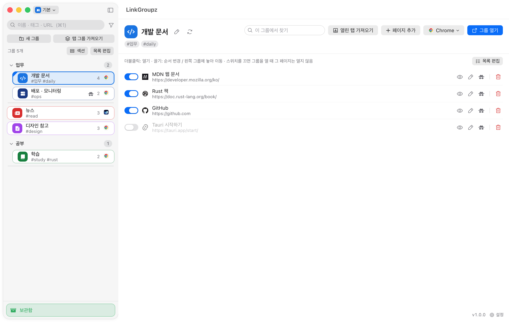
| 하고 싶은 일 | 방법 |
|---|---|
| 새 그룹 | 왼쪽 검색창 아래 새 그룹, 또는 그룹 목록 오른쪽 클릭 → 새 그룹 만들기 |
| 그룹 이름 · 색 · 아이콘 · 태그 바꾸기 | 그룹 이름 옆 연필 ✎. 아이콘은 기본 모양 40가지(폴더 · 코드 · 서버 · DB · 그래프 등) 중에서 고르거나 이미지 파일 선택으로 내 이미지를 넣습니다. 내 이미지는 가운데를 정사각형으로 잘라 앱 데이터 폴더에 복사해 두므로 원본을 지워도 남습니다. 색은 19가지이고, Chrome 탭 그룹은 9가지 색만 있어 앱 전용 색(남색 · 민트 · 코랄 등)은 가장 가까운 Chrome 색으로 열립니다 |
| 페이지 추가 | 페이지 추가 → URL · alias (alias 를 비우면 주소로 표시) |
| 그룹 전체 열기 | 그룹 열기, 또는 왼쪽 그룹 목록에서 그룹 더블클릭 |
| 페이지 열기 | 페이지 더블클릭, 또는 우클릭 → 열기 |
| 새 창으로 열기 | 그룹 · 페이지 우클릭 → 새 창으로 열기. 브라우저가 이미 떠 있어도 지금 창에 더하지 않고 새 창을 띄웁니다 (확장이 있으면 새 창에서 탭 그룹으로) |
| 시크릿 모드로 열기 | 그룹 · 페이지 우클릭 → 시크릿 모드로 열기, 또는 페이지 줄 오른쪽의 모자 · 안경 버튼. 그룹 · 페이지의 브라우저로 새 시크릿 창(Edge 는 InPrivate 창)에 엽니다. 관리 창에서 연 시크릿 창을 닫으면 관리 창이 다시 앞으로 옵니다 (macOS) |
| 그룹을 늘 시크릿 모드로 열기 | 그룹 편집(연필 ✎) → 브라우저 아래 항상 시크릿 모드로 열기, 또는 그룹 우클릭 → 항상 시크릿 모드로 열기. 켠 그룹은 그룹 열기 · 페이지 열기 · 메뉴바에서 열기가 모두 시크릿 창으로 열리고, 그룹 카드에 모자 · 안경 표시가 붙습니다 |
| 페이지 편집 · 삭제 | 줄 오른쪽 ✎ · 🗑 (휴지통은 확인 없이 바로 지웁니다) |
| 그룹을 열 때 빼 둘 페이지 | 페이지 줄 맨 왼쪽의 스위치를 끕니다. 끈 페이지는 흐리게 보이고 그룹을 열 때 열지 않습니다 (그 페이지만 열 때는 열립니다). 원본 LinkGroups 와 같은 형식으로 저장됩니다 |
| 이 그룹에서 찾기 | 그룹 이름 줄의 이 그룹에서 찾기. 그 그룹의 페이지 이름 · URL 에서 찾고 맞는 글자를 강조합니다 |
| 브라우저 탭 그룹과 맞추기 (동기화) | 그룹 이름 옆 ⟳ 버튼(또는 그룹 오른쪽 클릭 → 브라우저 탭 그룹과 동기화…). 그룹의 브라우저에 같은 이름으로 열린 탭 그룹과 비교해, 브라우저에만 있는 페이지를 골라 더하고 이 그룹에만 있는 페이지를 골라 뺍니다. 전체 덮어쓰기는 탭 그룹과 똑같이(순서까지) 맞춥니다. 브라우저를 건드리지 않고 읽습니다 |
| 키보드 | ⌘1(Windows 는 Ctrl1) 검색창 · ↓ 그룹 목록으로 · ↑ ↓ 그룹 · 섹션 오가기 · 섹션에서 ← → 접기 · 펼치기 · 그룹에서 → 페이지 목록, 페이지 목록에서 ← 그룹 목록 · Return 열기 · Tab 오른쪽 클릭 메뉴 |
| 되돌리기 | ⌘Z(Windows 는 CtrlZ)로 방금 한 일을 되돌리고, ⌘⇧Z(Windows 는 CtrlY 또는 Ctrl⇧Z)로 다시 실행합니다. 그룹 · 페이지 · 섹션 · 보관함을 바꾼 일(추가 · 편집 · 삭제 · 옮기기 · 보관 · 복원 · 스위치 · 동기화 · 가져오기)이 대상이고, 메뉴바 창에서도 됩니다. 앱을 켜 둔 동안 프로필마다 최근 50번까지 기억하고, 앱을 끄면 지워집니다. 이름 · 주소를 입력하는 칸에서는 입력한 글자를 되돌립니다. 브라우저에 연 탭 · 설정은 되돌리지 않습니다 |
| 순서 바꾸기 | 그룹 · 페이지를 끌어서 놓기. 그룹은 놓을 자리에 파란 가로선이 나옵니다 (섹션) |
| 그룹 여러 개 고르기 | ⌘(Windows 는 Ctrl) · ⇧ 클릭. 고른 카드는 왼쪽 위 모서리가 파랗게 표시됩니다. 고른 그룹은 함께 끌어 옮기거나, 오른쪽 클릭으로 섹션 · 보관함 이동 · 삭제를 한 번에 합니다 |
| 다른 그룹으로 옮기기 | 페이지를 왼쪽 그룹 위로 끌어다 놓기, 또는 우클릭 → 다른 그룹으로 이동 |
| 지우지 않고 치워 두기 | 그룹 · 페이지 우클릭 → 보관함으로 이동 (보관함) |
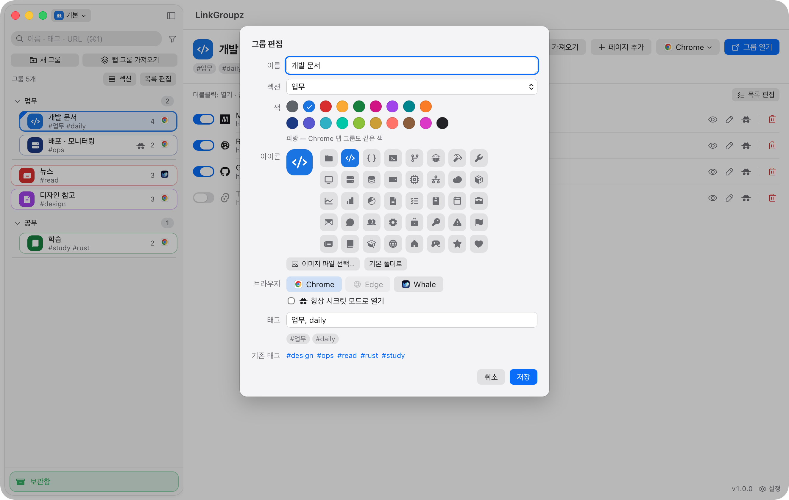
프로필
회사 · 개인처럼 그룹 목록을 통째로 나눠 쓰려면 프로필을 만듭니다. 프로필마다 그룹 · 섹션 · 보관함 · 백업이 따로 있고, 관리 창 · 메뉴바 창 · 검색은 지금 프로필의 그룹만 보여 줍니다.
| 하고 싶은 일 | 방법 |
|---|---|
| 프로필 만들기 | 설정 → 프로필 칸에 이름을 적고 추가. 처음부터 있던 목록은 기본 프로필입니다 |
| 프로필 바꾸기 | 메뉴바 창 검색창 왼쪽, 관리 창 왼쪽 맨 위의 프로필 버튼(👥 이름 ▾), 메뉴바 아이콘 오른쪽 클릭 → 프로필, 또는 설정 → 프로필의 바꾸기. 바꾸면 모든 창이 함께 바뀌고, 다음에 켤 때도 그 프로필로 시작합니다 |
| 이름 · 아이콘 · 색 바꾸기, 지우기 | 설정 → 프로필의 편집(그룹 아이콘처럼 기본 모양 40가지 또는 내 이미지, 색 19가지) · 삭제. 고른 아이콘은 프로필 버튼에 보입니다. 기본 프로필은 지울 수 없습니다. 지운 프로필의 데이터는 지우지 않고 백업 폴더의 deleted-profiles 로 옮겨 두므로, 그 안의 data.json 을 가져오기로 되살릴 수 있습니다 |
설정 → 데이터 · 백업의 내보내기 · 가져오기 · 자동 백업 · 되돌리기는 지금 프로필에 적용됩니다. 확장 · 단축키 · 그룹 열기 방식 같은 나머지 설정은 모든 프로필이 함께 씁니다.
섹션
그룹이 많으면 섹션으로 묶어 접고 펼칩니다. 섹션 > 그룹 > 페이지 순이고, 열 때는 그룹 단위로 엽니다. 섹션과 섹션 밖 그룹은 순서 제한 없이 섞어 둘 수 있고, 섹션 안 그룹은 들여 써서 구분됩니다. 펼친 섹션은 마지막 그룹 아래에 가로줄이 그어집니다.
| 하고 싶은 일 | 방법 |
|---|---|
| 섹션 만들기 | 그룹 목록 위 섹션 버튼, 그룹 목록 빈 곳 우클릭 → 새 섹션 만들기, 그룹 우클릭 → 새 섹션 만들기(그 그룹 자리에 섹션을 만들고 그 그룹을 넣습니다), 또는 그룹을 다른 그룹 위에 끌어 놓기(두 그룹을 담은 섹션이 그 자리에 생깁니다) |
| 그룹 넣기 · 빼기 | 그룹을 섹션 이름 위나 섹션 안 그룹 사이로 끌어 놓기, 그룹 우클릭 → 섹션, 섹션 우클릭 → 그룹 추가, 또는 그룹 편집의 섹션. 빼려면 우클릭 → 섹션 → 섹션 없음이나 섹션 끝 가로줄 · 섹션 밖으로 끌어 놓기 |
| 섹션 안에 새 그룹 | 섹션 우클릭 → 새 그룹 만들기 |
| 접기 · 펼치기 | 섹션 이름 클릭. 메뉴바 창도 같이 접힙니다 |
| 순서 바꾸기 | 섹션 이름을 끌어 놓기, 또는 섹션 우클릭 → 위로 이동 · 아래로 이동 |
| 이름 바꾸기 · 삭제 | 섹션 우클릭 → 섹션 편집… · 섹션 삭제… (안의 그룹은 지우지 않고 섹션이 있던 자리에 남깁니다) |
그룹을 끌 때 줄 위쪽 · 아래쪽에 놓으면 그 자리로 옮겨지고(가로선), 섹션 밖 그룹의 가운데에 놓으면 두 그룹을 담은 섹션을 만듭니다(파란 테두리). 가로선이 들여 그려지면 섹션 안으로, 왼쪽 끝까지 그려지면 섹션 밖으로 들어갑니다.
섹션은 원본 LinkGroups 1.5.5 이후와 같은 형식으로 data.json 에 저장되어, 서로 복사해도 섹션이 그대로 읽힙니다.
미리보기
페이지 줄 오른쪽의 👁 를 누르면 옆에 미리보기가 뜹니다. 크게 열기를 누르면 원래 크기 창으로 엽니다. 미리보기 창 가장자리를 끌면 크기가 바뀌고, 다음에도 그 크기로 엽니다 (작은 미리보기 · 크게 연 창 따로).
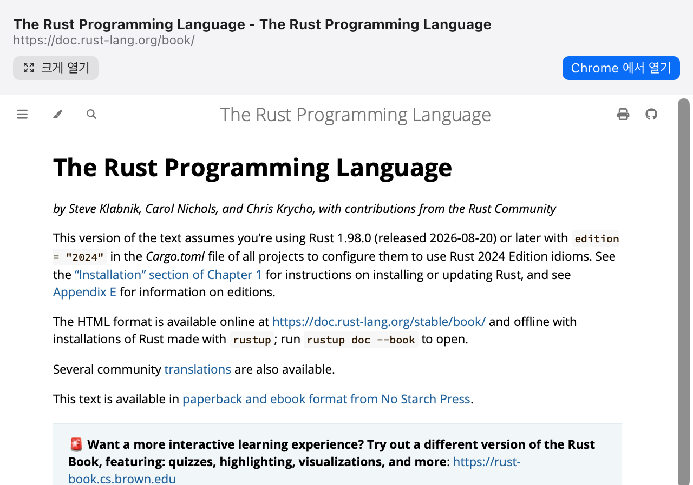
목록 편집 · 한꺼번에 삭제 · 이동
그룹 목록 위, 페이지 목록 위의 목록 편집을 누르면 체크박스가 생깁니다. 체크한 것을 한꺼번에 보관 · 삭제하거나 다른 그룹으로 이동할 수 있습니다. ⌘ · ⇧ 클릭으로 여러 개를 고를 수도 있습니다.
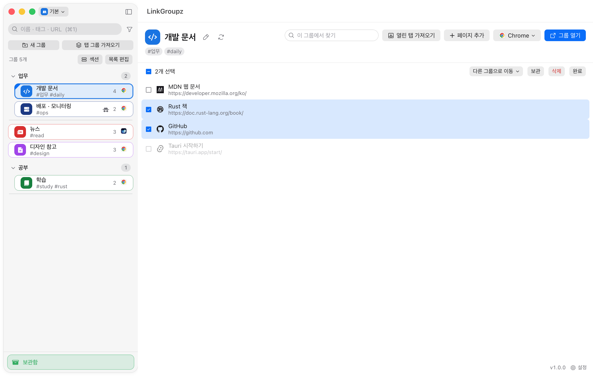
옮길 그룹에 같은 주소가 이미 있으면 중복으로 넣지 않고 원래 그룹에서만 뺍니다.
보관함
당장은 쓰지 않지만 지우기는 아까운 그룹 · 페이지를 보관함에 치워 둡니다. 보관한 것은 메뉴바 · 그룹 목록 · 검색에 나오지 않고, 언제든 되돌릴 수 있습니다.
| 하고 싶은 일 | 방법 |
|---|---|
| 보관하기 | 그룹이나 페이지를 우클릭 → 보관함으로 이동. 여러 개를 골라도 됩니다. 목록 편집에서 체크한 뒤 보관을 눌러도 됩니다 |
| 보관함 열기 | 관리 창 왼쪽 그룹 목록 맨 아래의 초록색 보관함 버튼 (오른쪽 숫자는 보관한 개수) |
| 보관한 것 보기 | 보관 그룹 · 보관 페이지가 접힌 채로 나옵니다. › 를 눌러 펼칩니다. 보관 그룹은 한 번 더 펼치면 안의 페이지가 보입니다 |
| 보관함에서 찾기 | 보관함 오른쪽 위 검색창. 관리 창 검색과 같은 규칙(띄어 쓴 검색어는 모두 맞아야 하고, #태그 는 태그만)이고, 보관 페이지는 보관하기 전 그룹 이름으로도 찾습니다. 결과가 있는 칸만 펼쳐 보여줍니다 |
| 그룹 복원 | 보관 그룹 줄의 복원 → 그룹 목록 끝으로 돌아갑니다. 페이지 · 아이콘 · 브라우저 설정은 그대로입니다 |
| 페이지 복원 | 보관 페이지 줄의 복원 메뉴에서 넣을 그룹을 고릅니다. 원래 그룹이 있으면 맨 위에 나오고, 새 그룹 만들기…를 고르면 원래 그룹 이름 · 색으로 채운 새 그룹에 넣습니다 |
| 완전히 지우기 | 줄 오른쪽 🗑 → 영구 삭제 (앱을 끄기 전에는 ⌘Z 로 되돌릴 수 있습니다) |
| 끌어서 보관 · 복원 | 그룹 · 섹션 · 페이지를 왼쪽 아래 보관함 버튼에 끌어 놓으면 보관합니다 (섹션은 안의 그룹을 보관하고 섹션을 지웁니다). 보관함에서 그룹을 왼쪽 그룹 목록의 원하는 자리에 끌어 놓으면 그 자리로, 페이지를 그룹 위에 놓으면 그 그룹으로 복원합니다 |
| 보관함 안에서 정리 | 보관 페이지를 보관 그룹 위에 끌어 놓으면 그 안으로 넣고, 보관 그룹끼리 · 보관 그룹 안 페이지끼리 끌어서 순서를 바꿉니다. 보관 그룹을 펼치면 페이지마다 복원 · 🗑 버튼이 있습니다 |
| 바로 열기 | 보관한 그룹 · 페이지를 더블클릭하면 복원하지 않고 바로 엽니다. ‘보관 그룹’ · ‘보관 페이지’ 제목을 눌러도 펼쳐집니다 |
페이지를 복원할 그룹에 같은 주소가 이미 있으면 다시 넣지 않고 보관함에서만 뺍니다.
그룹별 브라우저 (Chrome · Edge · Whale)
그룹마다 여는 브라우저를 정합니다. 새 그룹은 Chrome 이 기본이고, 그룹 목록 · 메뉴바의 그룹 카드 오른쪽 끝 아이콘으로 어느 브라우저에서 열리는지 보입니다.
- 바꾸기: 그룹 화면의 ‘그룹 열기’ 왼쪽 브라우저 버튼, 그룹 오른쪽 클릭 → 브라우저, 또는 그룹 편집(연필 ✎)의 브라우저
- 그룹 안 페이지 하나를 열 때도 그 그룹의 브라우저로 엽니다.
- Edge · Whale 에서 탭 그룹을 가져와 만든 그룹은 처음부터 그 브라우저로 정해집니다.
열린 탭 가져오기
그룹 화면의 열린 탭 가져오기를 누르고 위쪽 가져올 브라우저에서 Chrome · Edge · Whale 중 하나를 고르면, 그 브라우저에 열린 탭이 창 · 탭 그룹별로 나옵니다. 골라서 추가하면 그 그룹에 들어갑니다.
- 창 · 탭 그룹 줄의 체크박스: 그 안의 탭 전체 선택 · 해제
- 그룹에 이미 있는 주소는 이미 있음으로 표시되고 고를 수 없습니다.
- 탭 제목을 alias 로를 켜 두면 탭 제목이 표시 이름이 됩니다.
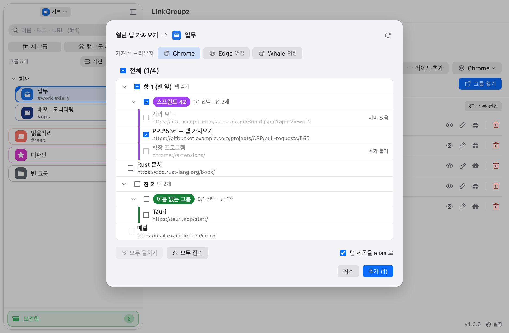
탭 그룹 가져오기
관리 창 왼쪽 검색창 아래 탭 그룹 가져오기는 고른 브라우저(Chrome · Edge · Whale)의 탭 그룹을 같은 이름 · 색의 그룹으로 만듭니다. 새로 만든 그룹은 가져온 브라우저에서 열립니다. 확장이 없어도 브라우저가 저장해 둔 세션에서 탭 그룹을 읽습니다.
- 같은 이름의 그룹이 이미 있으면 새로 만들지 않고 기존 그룹에 추가합니다.
- 기존 그룹에 이미 있는 페이지는 이미 있음으로 빠집니다.
- 버튼에 결과가 미리 나옵니다. 예: 가져오기 (새 그룹 2개 · 기존 그룹 1개에 추가 · 페이지 6개)
- 닫힌 탭 그룹 보기를 켜면 브라우저에 저장된 닫은 탭 그룹이 목록 아래에 접힌 채로 나옵니다. 열린 그룹처럼 골라 가져옵니다. 브라우저가 꺼져 있으면 저장된 그룹이 모두 닫힌 그룹으로 나옵니다.
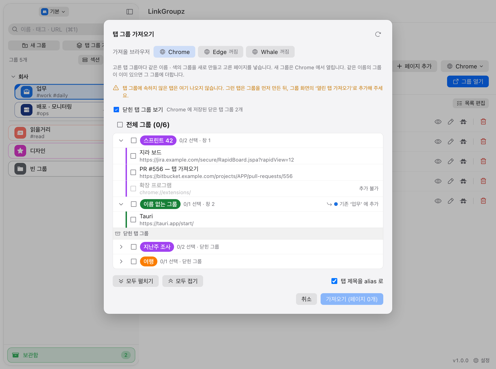
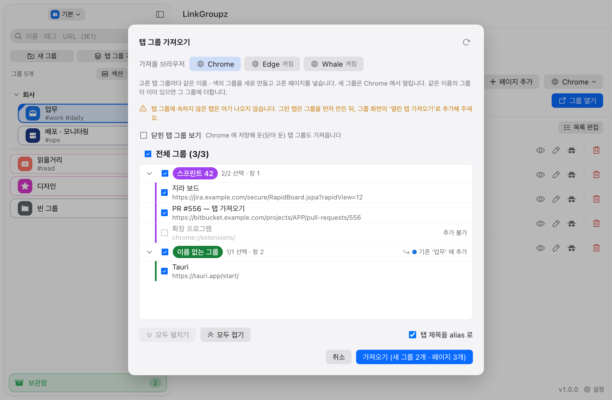
검색
| 입력 | 찾는 것 |
|---|---|
위키 | 그룹 이름 · 태그 · alias · URL 에 ‘위키’가 들어간 것 |
#업무 | 태그가 ‘업무’인 그룹 |
#업무 지라 | ‘업무’ 태그 그룹 안에서 ‘지라’가 들어간 페이지 (띄어 쓴 검색어는 모두 맞아야 합니다) |
검색어와 맞는 글자는 그룹 이름 · 태그 · 페이지 이름 · URL 에서 노랗게 강조됩니다. 검색 중에는 맞는 그룹이 있는 섹션이 모두 펼쳐집니다. 메뉴바 창 검색도 같습니다.
검색할 곳 고르기: 검색창 옆 거르기(깔때기) 버튼에서 이름(그룹 · 페이지) · 태그 · URL 을 켜고 끕니다. 관리 창 · 메뉴바 창 · 보관함이 함께 쓰고, 일부만 켜 두면 버튼이 파랗게 표시됩니다. #태그 검색어는 늘 태그를 봅니다.
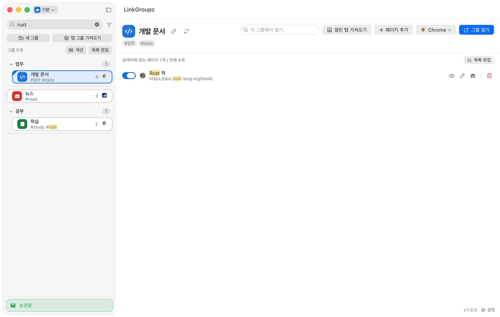
설정
메뉴바 창 아래 설정 버튼이나 관리 창 오른쪽 아래 설정으로 엽니다.
로그인할 때 자동으로 실행을 켜면 Mac 을 재부팅하거나 다시 로그인할 때 메뉴바에 LinkGroupz 가 바로 뜹니다. 이때는 아무 창도 열지 않습니다.
프로필 칸에서 프로필을 추가 · 편집(이름 · 아이콘 · 색) · 삭제합니다 (프로필).
화면 모드: 설정 아래쪽 화면 모드 칸에서 시스템 · 라이트 · 다크 를 고릅니다. 시스템이면 macOS · Windows 의 화면 모드를 따릅니다. 바꾸면 열린 창이 바로 바뀝니다.
언어: 설정 아래쪽 언어 · Language 칸에서 시스템 · 한국어 · English 를 고릅니다. 시스템이면 macOS · Windows 의 언어가 한국어일 때 한국어, 아니면 영어로 나옵니다. 바꾸면 열린 창이 바로 다시 그려집니다.
앱을 켤 때 여는 창: 앱을 직접 켤 때 메뉴바 창(기본)이나 관리 창을 엽니다. 처음 켤 때는 시작 안내와 관리 창이 열립니다.
Dock 에 아이콘 표시(기본 켜짐, macOS)를 켜 두면 Dock 아이콘이나 ⌘Tab 으로 LinkGroupz 로 바로 돌아옵니다. Dock 아이콘을 누르면 관리 창이 열립니다. 끄면 메뉴바 아이콘으로만 씁니다.
단축키: 아이콘을 누르지 않고 키보드로 메뉴바 창을 열 수 있습니다. 설정 → 단축키의 없음을 누른 뒤 쓸 단축키(예: ⌥Space)를 누르면 정해집니다. 다른 프로그램을 쓰는 중에도 그 단축키로 창이 열리고, 열리면 바로 검색할 수 있습니다. 창이 열린 채로 한 번 더 누르면 관리 창이 열립니다. 지우기로 없앱니다.
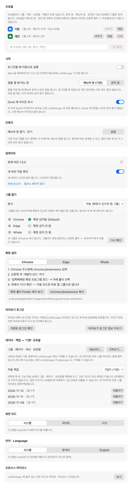
| 그룹 열기 방식 | 동작 |
|---|---|
| 자동 (기본) | 그룹의 브라우저에 확장이 있으면 탭 그룹, 없으면 새 창에 모두 |
| 항상 탭 그룹 | 항상 탭 그룹으로 (확장이 없으면 접속 오류 페이지가 하나 뜹니다) |
| 항상 새 창 | 항상 그룹의 브라우저 새 창에 모두 |
업데이트 칸에서 현재 버전과 자동 업데이트 상태를 보고, 자동 업데이트를 켜고 끕니다 (자동 업데이트).
미리보기 로그인 칸의 저장된 로그인 확인을 누르면 저장된 사이트 수가 나옵니다 (키체인을 읽으므로 macOS 가 키체인 암호를 물을 수 있습니다). 미리보기 로그인 정보도 여기서 지웁니다.
데이터 · 백업 칸 (데이터)
| 하고 싶은 일 | 방법 |
|---|---|
| 다른 컴퓨터로 옮기기 · 따로 보관 | 내보내기…로 그룹 · 페이지 · 섹션 · 보관함을 파일 하나로 저장합니다. 내 이미지로 바꾼 그룹 아이콘도 함께 들어갑니다 |
| 파일에서 가져오기 | 가져오기…로 파일을 고르면 무엇이 들었는지 보여 준 뒤 이것으로 바꾸기(지금 목록을 파일 내용으로) 또는 지금 목록에 더하기를 고릅니다. 원본 LinkGroups 의 data.json 도 가져올 수 있습니다. 바꾸기 전 목록은 백업 폴더에 따로 남깁니다 |
| 자동 백업 | 하루에 한 번 그날 처음 상태를 백업해 둡니다 (내 이미지로 바꾼 그룹 아이콘도 함께). 보관 기간은 끔 · 3일 · 7일(기본) · 14일 · 30일치 · 무제한 중에서 고르고, 기간이 지난 백업은 지웁니다 (무제한이면 지우지 않습니다) |
| 예전 상태로 되돌리기 | 백업 목록에서 날짜를 골라 되돌리기. 되돌리기 직전 목록도 따로 남겨 두므로 다시 되돌릴 수 있습니다 |
자동 업데이트
새 버전은 LinkGroupz 릴리스 페이지(설정 → 업데이트 칸의 릴리스 페이지 열기)에 올라옵니다. 앱이 이 페이지를 확인해 스스로 업데이트합니다. 지금 버전은 관리 창 오른쪽 아래와 설정 → 업데이트 칸에 나오고, 새 버전은 설정 → 업데이트 칸의 ↻ 로 바로 확인합니다.
| 하고 싶은 일 | 방법 |
|---|---|
| 새 버전 바로 확인 | 설정 → 업데이트 칸의 ↻. 새 버전이 있으면 옆에 x.y.z 으로 업데이트 버튼이 생기고, 관리 창 오른쪽 아래에도 새 버전 x.y.z 이 표시됩니다 |
| 업데이트하기 | 설정의 x.y.z 으로 업데이트 버튼, 또는 업데이트 창의 지금 업데이트. 같은 창에 내려받기 · 설치 진행 막대가 차오르고, 서명을 확인해 설치한 뒤 LinkGroupz 가 잠깐 꺼졌다 다시 켜집니다 (Windows 도 설치 프로그램 창 없이 설치합니다). 그룹 · 페이지 · 보관함 · 설정은 그대로입니다 |
| 자동 확인 끄기 · 켜기 | 설정 → 업데이트 칸의 새 버전 자동 확인. 꺼도 ↻ 로 직접 확인할 수 있습니다 |
- 자동 확인을 켜 두면(기본) 앱을 켜고 30초 뒤, 그 뒤 1시간마다 확인하고, 새 버전이 있으면 바뀐 점과 함께 지금 업데이트 / 나중에 를 묻는 업데이트 창을 띄웁니다.
- 나중에를 고른 버전은 더 새 버전이 올라오기 전까지 다시 묻지 않습니다. 그동안에도 설정에서 직접 업데이트할 수 있습니다.
- 내려받은 파일은 서명이 맞을 때만 설치합니다. 서명이 맞지 않으면 업데이트 창에 ‘받은 파일의 서명이 맞지 않아 설치하지 않았습니다’ 라고 알리고 그대로 둡니다.
- 업데이트 뒤 macOS 가 키체인 접근을 물으면 Mac 로그인 암호를 넣고 항상 허용을 누릅니다. 확장을 쓰는 경우 브라우저에서 확장을 한 번 새로고침합니다.
- 업데이트한 뒤 처음 켜면 그 사이 바뀐 점을 보여주는 창이 뜹니다. 설정 → 업데이트 칸의 바뀐 점 보기로 다시 볼 수 있습니다.
데이터 · 업데이트 · 삭제
| 무엇 | 위치 |
|---|---|
| 그룹 · 페이지 · 보관함 | ~/Library/Application Support/LinkGroupz/data.json |
| 자동 백업 | ~/Library/Application Support/LinkGroupz/backups |
| 더한 프로필의 그룹 · 백업 | ~/Library/Application Support/LinkGroupz/profiles/<프로필 id> (기본 프로필은 위 data.json · backups) |
| Chrome 확장 | ~/Library/Application Support/LinkGroupz/chrome-extension |
| 사이트 아이콘 | ~/Library/Application Support/LinkGroupz/favicons |
| 그룹 아이콘 이미지 | ~/Library/Application Support/LinkGroupz/icons |
| 미리보기 로그인 쿠키 | 키체인 ‘LinkGroupz 미리보기 로그인 쿠키’ |
백업 · 다른 Mac 으로 옮기기: 설정 → 데이터 · 백업의 내보내기…로 저장한 파일을 다른 Mac 의 가져오기…로 넣습니다. 자동 백업은 같은 칸에서 보관 기간을 정하고 되돌립니다 (설정).
업데이트: 자동 업데이트를 켜 두면 앱이 알아서 묻고 설치합니다 (자동 업데이트). 직접 하려면 새 DMG 의 LinkGroupz 를 Applications 에 덮어쓰고, 확장을 넣은 브라우저(Chrome · Edge · Whale)에서 확장을 새로고침합니다. 데이터는 그대로 남습니다.
삭제: 메뉴바 창의 종료 → Applications 의 LinkGroupz 를 휴지통으로 → Chrome · Edge · Whale 에서 확장 제거. 데이터까지 지우려면 위 LinkGroupz 폴더와 키체인 항목을 지웁니다.
자주 묻는 문제
그룹 · 페이지가 목록에서 사라졌어요
먼저 프로필 버튼(메뉴바 창 · 관리 창 왼쪽 위)에서 다른 프로필로 바뀌어 있지 않은지 보세요. 그 다음 관리 창 왼쪽 맨 아래 보관함을 열어 보세요. 보관함으로 옮긴 것은 목록 · 메뉴바 · 검색에 나오지 않습니다. 거기서 복원하면 됩니다. 방금 실수로 지웠다면 ⌘Z(Windows 는 CtrlZ)로 되돌리고, 앱을 껐다 켰다면 설정 → 데이터 · 백업에서 전날 백업으로 되돌리기할 수 있습니다.
시작 안내 창이 계속 ‘확장을 기다리는 중’이에요
chrome://extensions 에서 LinkGroupz Tab Groups 가 켜져 있는지, 로드한 폴더가 ~/Library/Application Support/LinkGroupz/chrome-extension 인지 확인하세요. 다른 Chrome 프로필에 설치해도 감지됩니다. Edge 는 edge://extensions 에서 같은 것을 확인하세요. 설정 창에 브라우저별 감지 결과가 나옵니다.
그룹을 열었는데 탭 그룹이 안 생기고 탭만 열려요
설정의 그룹 열기 방식이 항상 새 창이 아닌지, 확장이 감지되는지 확인하세요. 앱을 업데이트했다면 확장을 넣은 브라우저에서 확장을 새로고침해야 합니다.
linkgroupz.invalid 접속 오류 페이지가 떠요
확장이 없거나 꺼진 상태에서 탭 그룹으로 열려고 할 때 뜹니다. 확장을 켜거나, 설정에서 그룹 열기 방식을 자동으로 두세요.
미리보기에서 계속 로그인 화면이 보여요
미리보기의 크게 열기 창에서 로그인해 주세요. 키체인 허용 창이 뜨면 항상 허용을 눌러야 로그인이 저장됩니다.
열린 탭 가져오기를 눌렀는데 아무것도 안 나와요
고른 브라우저가 켜져 있어야 합니다. 확장이 없다면 ‘Google Chrome(또는 Microsoft Edge · Whale)을 제어’ 허용이 필요합니다. 거부했다면 시스템 설정 → 개인정보 보호 및 보안 → 자동화에서 LinkGroupz 의 브라우저 항목을 켜세요.
탭을 가져올 때 브라우저 창이 잠깐 나왔다 들어가요
LinkGroupz 는 브라우저가 스스로 저장해 두는 세션 파일에서 열린 탭 · 탭 그룹을 읽어, 브라우저를 건드리지 않습니다. 그 파일을 읽지 못한 경우에만 확장에게 받으려고 임시 탭을 잠깐 열었다 닫는데, 이때 브라우저가 잠깐 앞으로 나옵니다. 방금 바꾼 탭이 몇 초 안 돼 아직 저장되지 않았을 수 있으니, 잠시 뒤 다시 가져오면 됩니다.
자동화 목록에 LinkGroupz 나 Edge · Whale 이 없어요
이 목록에는 앱이 그 브라우저를 실제로 한 번 제어하려고 해서 macOS 가 물어본 항목만 나옵니다. 직접 추가하는 곳은 없습니다. 확장이 있으면 LinkGroupz 는 브라우저를 제어하지 않으므로 목록에 없어도 정상이고, 확장 없이 그 브라우저에서 열린 탭 가져오기를 처음 할 때 물어본 뒤에 생깁니다. 그룹을 여는 데는 이 허용이 필요 없습니다.
Edge(또는 Chrome · Whale)에서 시크릿 창으로 열리지 않아요
회사 관리 정책으로 그 브라우저의 시크릿(InPrivate) 창이 꺼져 있으면 브라우저가 일반 창으로 열어 버립니다. LinkGroupz 는 이때 일반 창으로 열지 않고 안내를 띄웁니다. 그 그룹을 다른 브라우저로 바꾸면 시크릿 창으로 열 수 있습니다.
Dock 에 LinkGroupz 아이콘이 생겼어요
기본으로 Dock 에 나옵니다. 메뉴바 아이콘만 쓰려면 설정 → Dock 에 아이콘 표시를 끄세요.
재부팅했는데 LinkGroupz 가 켜지지 않아요
설정의 로그인할 때 자동으로 실행이 켜져 있는지 확인하세요. 켜져 있는데도 안 켜지면 시스템 설정 → 일반 → 로그인 항목에서 LinkGroupz 가 허용돼 있는지 확인합니다. DMG 안에서 실행한 앱은 등록할 수 없으니 응용 프로그램 폴더로 옮긴 뒤 켜 주세요.
업데이트 확인이 실패해요
‘새 버전을 확인하지 못했습니다’가 나오면 인터넷 연결을 확인합니다. ‘이 컴퓨터용 배포 파일이 아직 올라오지 않았습니다’가 나오면 그 버전이 이 컴퓨터(운영체제 · CPU)용으로는 아직 나오지 않은 것입니다.
키체인 암호를 묻는 창이 또 떠요
앱을 새 버전으로 바꾸면 macOS 가 미리보기 로그인 쿠키 접근을 다시 물을 수 있습니다. Mac 로그인 암호를 넣고 항상 허용을 누르면 그 버전에서는 다시 묻지 않습니다.